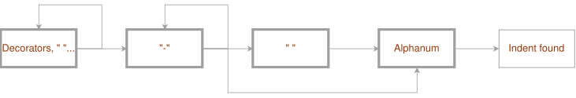
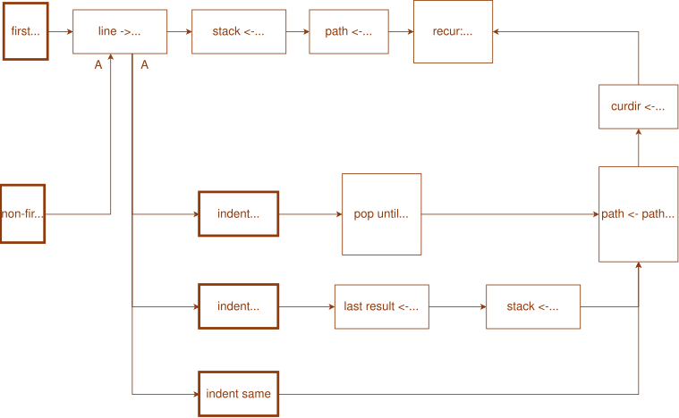

Simple Diagrams For Easytree tool
Applications of my simple diagrams
In the previous post about my simple diagrams I demonstrated how they are easy and intuitive and how they cover the same functionality as semantic nets, some of UML diagrams, FlowChart, Grafcet and many others - they are just route maps! Another example: Easytree tool.
The idea of easytree is simple: it parses output of tree(1) command (which can be got from AI chat or from some documentation as well) and either recreates the same tree (possibly prepending with some folder) or produces POSIX shell script doing the same (it has also dry mode allowing just to check what will be created).
There are many different algorithms in easytree, some of them are:
- detect of indentation and entry name
- extract of paths from tree(1) output
The first algorithm can be drawn as:

As usual, the bold boxes are kind of "road signs": ie, conditions - you pass through it only if you satisfy the condition/sign.
The second algorithm can be drawn as:

In this diagram we see:
- "road signs"/conditions
- routes (like "A"): from the box "non-first line" we visit "line -> indent,name" box and
then we return to the "switch" "indent to left", "indent to right", "indent same"
- symbols "->" and "<-" are used meaning "get from", "put to"
- the box with "recur: …" means "go to recursion" - the algorithm is recursive